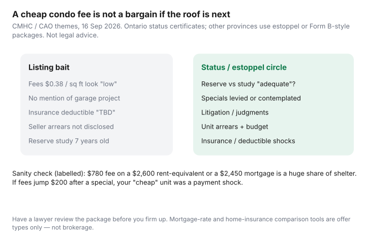

Housing · Canada
Condo fee red flags for Canadian buyers: reserve funds, special assessments, and status certificates

Low condo fees are not automatically a bargain: they can mean the reserve fund is behind and a special assessment is coming. Before you firm up, read the status certificate (Ontario) or Form B (B.C.) and compare the reserve fund to the latest study. CMHC’s condominium buyer’s guide warns that an underfunded reserve can mean a big jump in monthly fees or a lump-sum payment. This is a shelter-cost checklist, not legal or engineering advice.
Key takeaways
- Low fees are a question, not a bargain. Ask whether the reserve matches the study.
- Special assessments, levied or expected, belong in the offer math, not as a surprise after closing.
- Ontario: status certificate within 10 days, up to $100 including all taxes (CAO). B.C.: Form B within 7 days, up to $35 plus copying.
- Litigation, unit arrears and insurance deductibles can be payment shocks as real as a rate change.
- Fee-to-mortgage and fee-to-rent checks show whether the monthly cost still works.
Why can low condo fees be a warning, not a bargain?
Because a low fee can mean the board is under-collecting for the reserve fund, and the gap comes back later as higher fees or a special assessment. Compare buildings on fee plus likely catch-up, not fee alone.
Fees pay for operations (common-area hydro, cleaning, contracts, management) and contributions to the reserve fund. CMHC says the reserve pays for major repair and replacement of common elements over the life of the building, such as the roof, roads, elevators, plumbing and other systems (CMHC condominium buyer’s guide). If fees were kept “competitive” for listings, the reserve may be behind the engineer’s plan.

What does a reserve fund study tell you, and what counts as “adequate”?
It estimates the building’s major repair and replacement costs and whether the fund and contributions can cover them. “Adequate” means the funding plan keeps up with the study, not that the balance looks big.
In Ontario, a study includes a component inventory and a funding plan projected over at least 30 years. The first (class 1, comprehensive) study is due within a year of registration; after that, class 3 (no site inspection) and class 2 (with a site inspection) studies alternate at least every three years. The board must review a new study within 120 days, propose a funding plan, and send owners a notice of future funding within 15 days of proposing it (CAO: reserve funds).
In B.C., the same document is a depreciation report. Since July 1, 2024, stratas with five or more lots must get one every five years and can no longer defer it with a ¾ vote (B.C. depreciation report requirements). An old study or a missing report is a stale map: ask when the next one is due.
How do you spot special assessment history and pending projects?
Look for specials charged since the current budget, any fee increase and its reason, and projects named in board minutes (windows, elevators, building envelope, parking). If a project is “being discussed” in minutes but missing from the certificate, ask why.
CMHC suggests asking whether there were special assessments in the last five years, what they cost, and whether more are expected in the next 10 to 15 years; frequent, costly ones may point to a deteriorating building or weak financial management (CMHC: questions to ask). The CAO notes that what a status certificate says (or leaves out) binds the corporation; in one Superior Court decision an owner did not have to pay a special assessment that was not clearly disclosed (CAO: status certificates). That is a point for your lawyer, not a loophole to bet a closing on.
What should you circle on a status certificate or Form B?
Circle the reserve fund and study, fee increases, specials, arrears, insurance and litigation. These are the lines that change your monthly cost after you move in.
- Monthly common expenses for the unit, any increase and the reason, and whether the seller is in arrears.
- Reserve fund statement and the most recent study; notice of future funding if provided.
- Special assessments charged since the current year’s budget, and the reason.
- Budget, last audited financial statements, declaration, by-laws and rules.
- Outstanding judgments against the corporation or ongoing litigation.
- Certificates of insurance, and any large deductibles that can pass to owners (water damage, earthquake in B.C.).
Ontario: anyone can request a status certificate; the corporation can charge up to $100 including all taxes and must provide it within 10 days (CAO). Faster delivery can cost a rush fee, but the $100, 10-day option must be offered. B.C.: the Form B: Information Certificate must be provided within 7 days and costs up to $35 plus up to 25 cents per copied page; the latest depreciation report and electrical planning reports are attached (B.C. Form B). Other provinces use estoppel certificates or similar packages. Budget time for the lawyer, not just the lender.
Which litigation, arrears and insurance issues can shock your budget?
A lawsuit can turn into years of extra costs, unpaid seller fees can follow the unit, and a big corporation deductible can land on you after a leak. Ask about each one before you waive conditions.
A building in a construction lawsuit can still be a fine place to live, or it can be a years-long special. Seller arrears can become your problem if unpaid common expenses attach to the unit. On insurance, check the corporation’s deductibles and quote your own unit policy for the address (see condo unit insurance deductibles). Comparison education only.
How do you sanity-check condo fees against your mortgage and rent?
Put the fee next to the mortgage payment and a similar rent, then add a possible fee jump. If the total no longer works, the low-fee listing is not cheap.
| Check | Example | Question |
|---|---|---|
| Fee / mortgage P+I | $780 / $2,450 ≈ 32% | Are you buying shelter or a cost-sharing contract? |
| Fee vs similar rent | $780 vs $2,600 rent | Would you pay that fee on top of rent? That is ownership. |
| Fee + $150 increase after a study | $930 | Does the “low-fee” listing still look cheap? |
Put the result back on the rent-vs-buy stack. A 0.15% mortgage-rate win from renewal shopping will not save a $200 monthly fee surprise. If a special is already announced, see how to budget a condo special assessment.
What should you ask your lawyer and realtor before firming up?
Ask about the reserve, specials, lawsuits, insurance, rules and your review deadline. If the answers are vague, keep your conditions in place.
- Is the reserve funding plan adequate versus the latest study, in your professional view?
- What specials are levied or expected, in plain dollars per unit?
- Any lawsuits or construction files I will inherit as an owner?
- Insurance deductibles and any pending premium jump?
- Rules that affect use (short-term rental bans, pets, EV chargers): lifestyle, but also resale.
- How many days do we have to review after the certificate arrives?
If the answers are shrugs, you do not have a deal. You have a listing.
Sources
- CMHC Condominium Buyer’s Guide: Buying a condominium — reserve fund purpose, status/estoppel package, conditional offers, underfunded-reserve warning. As of 7 Oct 2026.
- CMHC Condominium Buyer’s Guide: Questions to ask — special assessments in the last five years and expected in the next 10 to 15 years. As of 7 Oct 2026.
- Condominium Authority of Ontario: Status certificates — contents, up to $100 including all taxes, 10 days, disclosure binds the corporation. As of 7 Oct 2026.
- Condominium Authority of Ontario: Reserve funds — class 1/2/3 studies, at least every three years, 30-year funding plan, 120-day review, notice of future funding. As of 7 Oct 2026.
- Province of B.C.: Form B Information Certificate — 7 days, up to $35 plus 25 cents per page, required attachments. As of 7 Oct 2026.
- Province of B.C.: Strata depreciation report requirements — five-year cycle for stratas with five or more lots, no ¾-vote deferral since July 1, 2024. As of 7 Oct 2026.
Frequently asked questions
Why would low condo fees be a problem?
Because fees fund operations and the reserve fund, which pays for major repairs like roofs, elevators and parkades. CMHC warns that an underfunded reserve can mean a big jump in monthly fees or a lump-sum payment (a special assessment) after you move in.
What is a reserve fund study?
A professional estimate of the building’s major repair and replacement needs and whether the reserve fund and owner contributions are adequate. In Ontario, the first (class 1) study is due within a year of registration, then updated studies alternate with and without a site inspection at least every three years. B.C. calls it a depreciation report, required every five years for stratas with five or more lots.
What should I circle on a status certificate?
The reserve fund statement and latest study, any fee increase and the reason, special assessments since the current budget, arrears on the unit, the budget and audited statements, insurance certificates, and any judgments or litigation. In Ontario anyone can request one; the corporation can charge up to $100 including all taxes and must provide it within 10 days.
What is the B.C. equivalent of a status certificate?
The Form B: Information Certificate. A strata corporation must provide it within 7 days of a request and can charge up to $35 plus up to 25 cents per copied page. The most recent depreciation report must be attached.
How do I sanity-check fees against a mortgage?
Put the fee next to the mortgage payment and a similar rent. In an example with made-up inputs, a $780 fee on a $2,450 mortgage payment is about 32% on top of principal and interest, and it will not amortise away. Then ask what happens if fees rise $150 after the next study.
Is this legal or brokerage advice?
No. Have a lawyer review the package before you firm up. Mortgage-rate and home-insurance comparison tools are offer types only.
Researched and drafted with AI assistance and fact-checked against official Canadian sources. How we create content.
Disclosure: Mortgage rate tools and home insurance comparison tools are offer types. Saving Optimizer may earn a commission if we later add partner links. We do not currently claim lender, insurer, or realtor partnerships. This is not legal, brokerage, or engineering advice. Your lawyer should read the documents before you waive conditions.